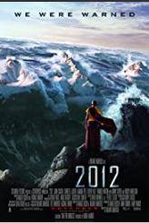
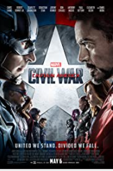
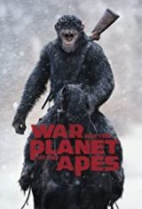

How to Train Your Dragon(2010)
Captain America: Civil War(2016)
War for the Planet of the Apes(2017)
  A hapless young Viking who aspires to
hunt dragons becomes the unlikely
friend of a young dragon himself,
and learns there may be more to
the creatures than he assumed.
A frustrated writer struggles to
keep his family alive when a series
of global catastrophes threatens to
annihilate mankind.
Political involvement in the Avengers' affairs
causes a rift between Captain America and
Iron Man.
Peter Parker balances his life as an ordinary
high school student in Queens with his
superhero alter-ego Spider-Man, and finds
himself on the trail of a new menace
prowling the skies of New York City.
After the apes suffer unimaginable losses,
Caesar wrestles with his darker instincts
and begins his own mythic quest to avenge
his kind.
References: